1972 · Age 16
The young mathematician
Drawn to problems with precise answers — answers that could take hours to find.
A historical investigation
The road to Bitcoin, 1972–2014
Chapter I
1972 – 1979
1972 · Age 16
Drawn to problems with precise answers — answers that could take hours to find.
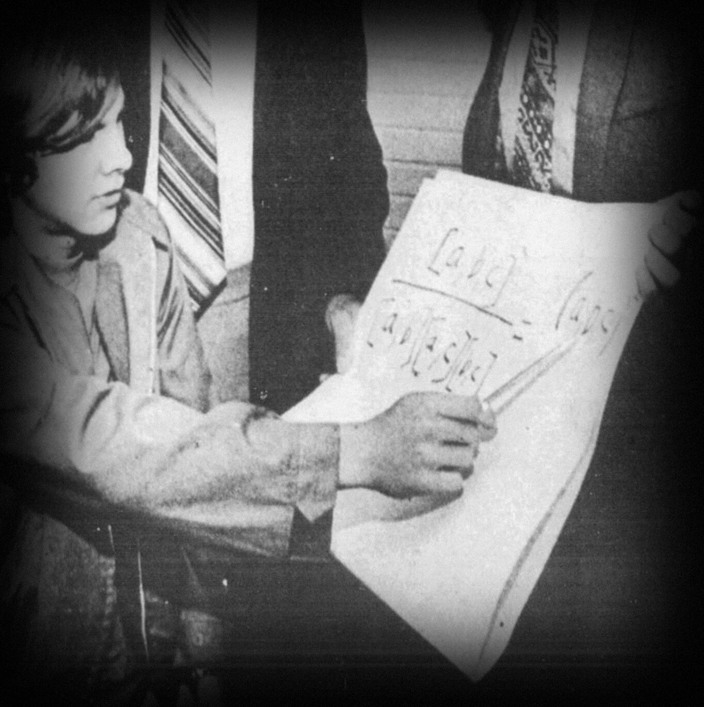
1974 · Age 18
From Arcadia High School, valedictorian, to Caltech.
1974 · Age 18
Mathematics, physics, engineering — and, increasingly, computers.
1970s · Mathematics
William Feller’s probability theory. Decades later, Satoshi would cite it in the whitepaper.
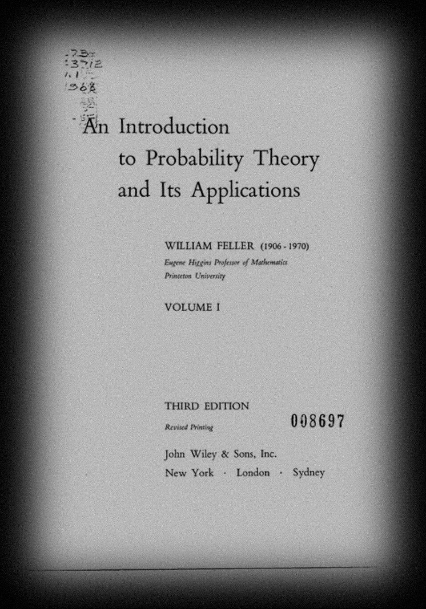
1978 · Age 22
A partnership through remarkable achievements — and extraordinary hardship.
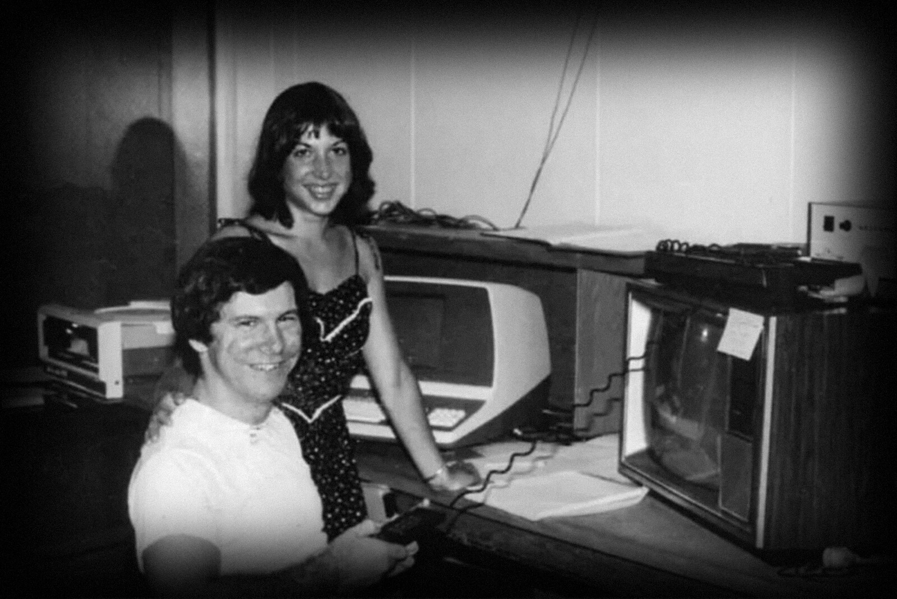
1979 · Age 23
Mattel’s Intellivision: sophisticated systems in extraordinarily little memory.
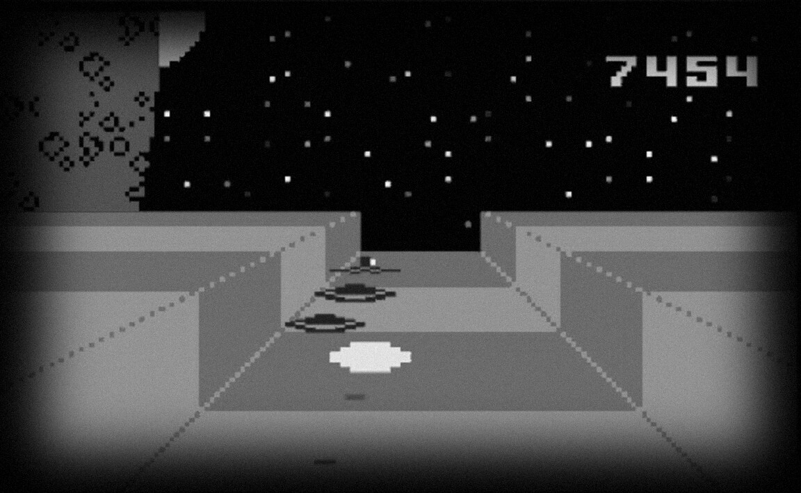
Chapter II
1981 – 1993
Early 1980s · A parallel story
How can people who distrust one another run a trustworthy computer system?
1982 · UC Berkeley
The problem of trust — central to digital money, and one day to Bitcoin.
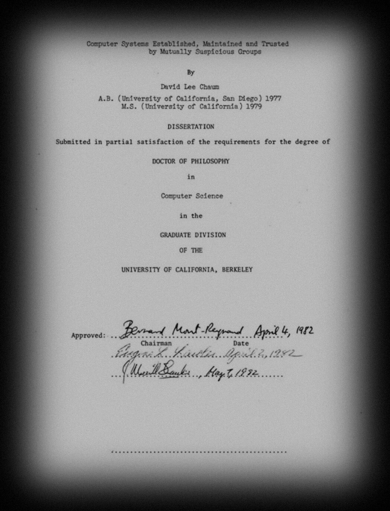
1982 · Crypto ’82
Electronic payments with the privacy of physical cash.
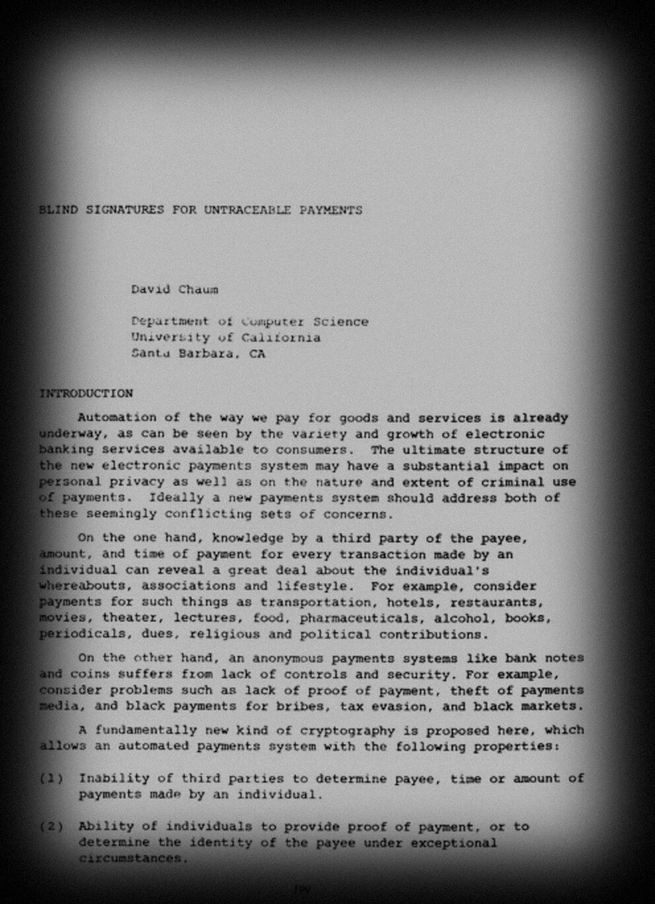
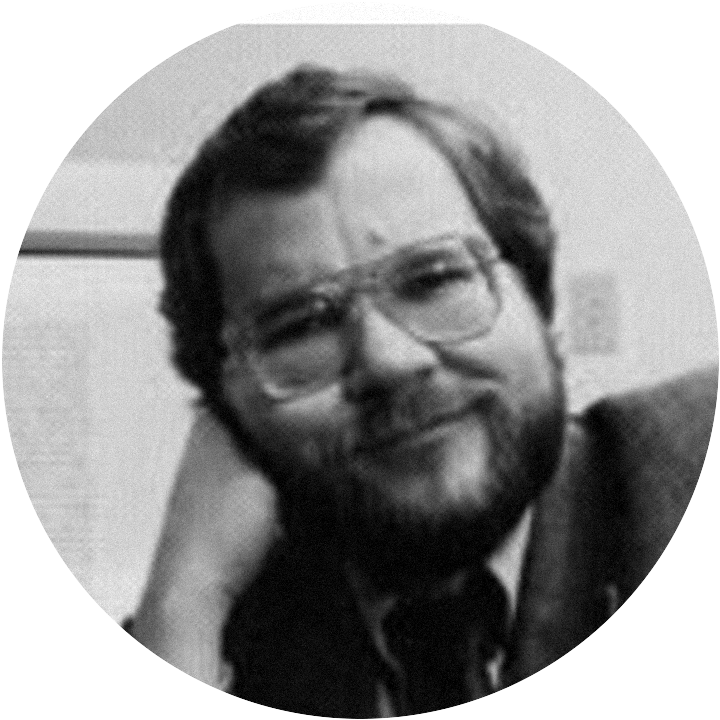
1991
PGP: strong encryption for ordinary users. Hal Finney contributed as a programmer.
1992 · Crypto ’92
Cynthia Dwork and Moni Naor: make the sender of junk email do a little work first.
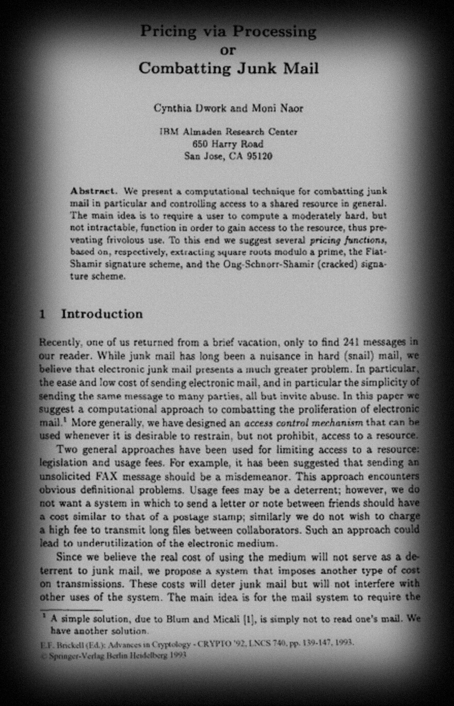
1992
An ancestor of proof of work.
1993 · Wired
The Cypherpunks: privacy built with software, not merely promised by law.
Chapter III
1996 – 2002
1996 · Age 40
In this world: a younger cryptographer named Len Sassaman.
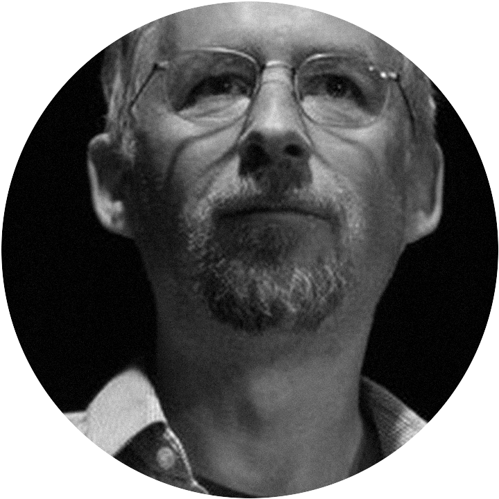
1997
Hashcash: proof that a computer has done work. Built to fight spam.
Hashcash · 1997
Millions of attempts to find. One to verify.
1998
Creator of Crypto++.
Proposed b-money.
1998
Pseudonymous users. Signed transfers. Shared records of who owns what.
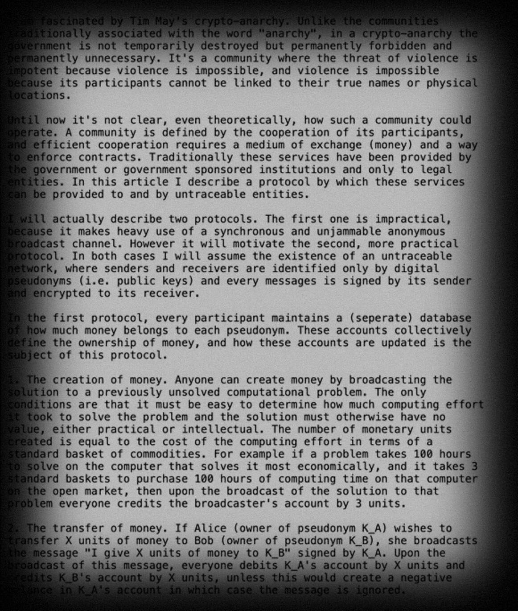
b-money
Coordination and reliable agreement were left unresolved.
1998
Digital property, contracts, scarcity —
and Bit Gold.
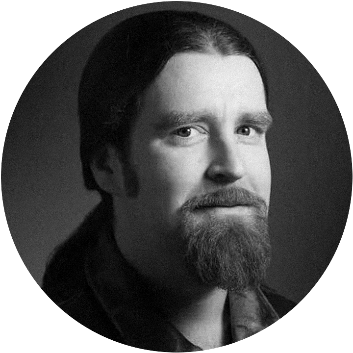
Late 1990s
Privacy and anonymous messaging.
He knew Hal Finney.
The small world
The missing ingredient
The missing ingredient
Chapter IV
Reusable Proofs of Work · 2004 – 2005
2004 · Age 48 · He built it
Working digital-money software — not merely a proposal.
August 15, 2004 · Cryptography mailing list
Hal asked cryptographers to test his Hashcash-based server — and to criticize it.
August 18, 2004 · The critic
“I’m wondering how applicable RPOW is.”Ray Dillinger (“bear”), Cryptography mailing list
“…aren’t we restricted to applications already nailed down by digital cash schemes?”
August 19, 2004 · Hal answers
“Another way to think of RPOWs is as an implementation of Nick Szabo’s concept of ‘bit gold’.”Hal Finney, Cryptography mailing list
August 21, 2004 · Adam Back replies
Back saw RPOW as Chaumian e-cash, built from Hashcash and trusted hardware.
The IBM coprocessor
Even the operator couldn’t cheat — but everyone depended on trusted hardware.
The weakness
One machine’s fate should not decide whether someone’s savings survive.
World of RPOW
Several RPOW servers keeping one common record of spent tokens.
Hal Finney · World of RPOW
“Ultimately, this approach was considered and rejected.”Hal Finney, RPOW documentation: clustering and shared databases
The unsolved question
February 2005 · CodeCon
RPOW meets BitTorrent: share files to earn tokens, spend tokens to buy priority.
February 27, 2005 · RPOW 1.2.0
Proof of work, transferable tokens, peer-to-peer apps — and anonymous communication.
February 2005
The problem does not.
Chapter V
2005 – 2008
2005 – 2007
Who made the leap?
December 2005 · Nick Szabo
Proof of work, timestamping, ownership records — and still no public implementation.
2007
We do not know who.
November 2007
Hal co-authors the OpenPGP standard — still a working cryptographic engineer.
April 2008 · Nick Szabo, on Bit Gold
“Anybody want to help me code one up?”Nick Szabo, blog comment
April 2008
There is no verified evidence he answered.
Crypto++ · Reported commit gap
Reported by Ben Sigman. Individual SVN revisions require independent verification.
August 20, 2008
Nick Szabo’s. The same day, Satoshi writes to Adam Back. Striking — but not evidence.
Chapter VI
2008 – 2009
August 20, 2008 · A stranger writes
“I’m getting ready to release a paper that references your Hashcash paper and I wanted to make sure I have the citation right.”Satoshi Nakamoto, first email to Adam Back
Adam Back replies
“You maybe aware of the ‘B-money’ proposal … by Wei Dai which sounds to be somewhat related to your paper.”Adam Back, reply to Satoshi
August 21, 2008 · Satoshi to Adam Back
“Thanks, I wasn’t aware of the b-money page, but my ideas start from exactly that point.”Satoshi Nakamoto, email to Adam Back
August 21, 2008
Independent? Careful wording? Concealment?
The email alone cannot tell us.
October 31, 2008
An unknown author. Familiar inventions — combined into agreement without a trusted issuer.
The whitepaper
| [1] | W. Dai | b-money | 1998 |
| [2] | H. Massias et al. | Secure timestamping with minimal trust | 1999 |
| [3] | S. Haber, W.S. Stornetta | How to time-stamp a digital document | 1991 |
| [4] | D. Bayer et al. | Efficiency of digital time-stamping | 1993 |
| [5] | S. Haber, W.S. Stornetta | Secure names for bit-strings | 1997 |
| [6] | A. Back | Hashcash — a denial of service counter-measure | 2002 |
| [7] | R.C. Merkle | Protocols for public key cryptosystems | 1980 |
| [8] | W. Feller | An introduction to probability theory | 1957 |
The whitepaper
Not cited
Oversight, editorial judgment, or deliberate distancing? The motive is unknown.
November 2008 · Bitcoin source
The code existed before launch — and its monetary parameters were still being refined.
Bitcoin v0.1 · SHA-256
SHA-256 code descended from Crypto++. Proof of reuse — not of authorship.
January 2009
“Running bitcoin”Hal Finney, on Twitter
January 12, 2009
Satoshi → Hal: the first widely recognized person-to-person Bitcoin transaction.
January 2009 · Hal–Satoshi emails
Hal reported bugs. Satoshi replied with fixes and deep knowledge of the C++ code.
April 18, 2009 · Santa Barbara
Hal runs a documented ten-mile race.
April 18, 2009
A serious problem for any theory that Hal ran the identity alone.
Chapter VII
One name. More than one person?
The alibi changes the question
A hypothesis
One engineer designing the software. Another handling correspondence and releases.
Len returns
Knew Hal. Understood pseudonymous cryptography. Encouraged authors to use pseudonyms.
Finding Satoshi
The documentary proposes it. Friendship and expertise do not prove it.
The hypothesis
One or more of
Possible. Not proven.
The theory meets its limits
The case is not closed
It competes with a simpler possibility: Satoshi was someone else.
Chapter VIII
2009 – 2014
2009 · Age 52
As Bitcoin began, Hal was in excellent physical condition.
August 2009 · Age 53
Seven months after Bitcoin’s launch.
December 2009
Fran turned a marathon into an ALS fundraiser. Hal joined the final stretch — and crossed the line.
2013 · Age 56
Written with assistive technology. He wrote about Satoshi as someone else.
August 28, 2014
Encryption for ordinary people. A working digital-cash experiment. One of Bitcoin’s first advocates.
Who was Satoshi? · Still unresolved